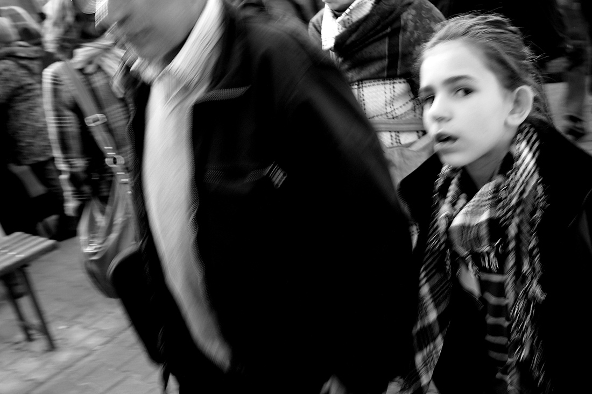

Czym jest fotografia uliczna?
Rodzaj fotografii, której tematem są przypadkowe,
odpowiednio uchwycone ujęcia życia ulicznego.
Jest to dyscyplina z pogranicza reportażu oraz fotografii artystycznej.
Rodzaje fotografi ulicznej

Dokumentalna
- przedstawia sytuacje z życia codziennego

Detal
- skupia się najczęściej na przedmiotach
- pokazuje je z bliska
- uwidacznia szczegóły
Portretowa
polega na fotogrfowaniu najczęściej przypadkowo napodkanych osób